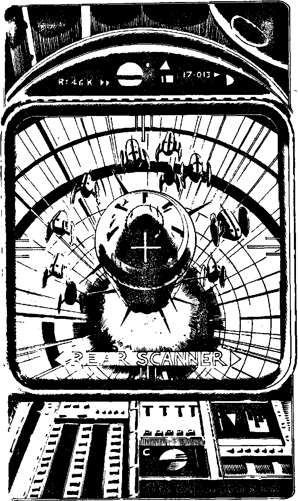

109
You dive down a tunnel which opens up on your left, hoping that the interceptor droids will not be able to make the same manoeuvre at such speed. The gyro stabilisers whine as you use every ounce of performance the Strike Fighter has. The tunnel curves to the left and you bank and turn in an arc. When it straightens out you can see the mouth of the hangar from the inside, now some miles ahead of you. The droid repair shot's loom towards you and they are protected by a missile launcher which is directed away from you at the hangar. It must be the one that launched the missile the size of your Fighter out of the hangar at you. It is rearmed. The interceptors have lost little time, screaming along behind you as you hurtle over the missile launcher. Your radar tells you that it has launched another missile which is close behind. Will you:
| Use electronic counter measures? | Turn to 164 |
| Use your aft lasers to deal with it? | Turn to 134 |